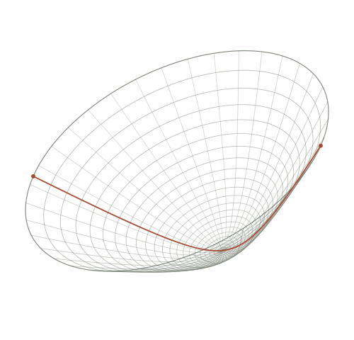
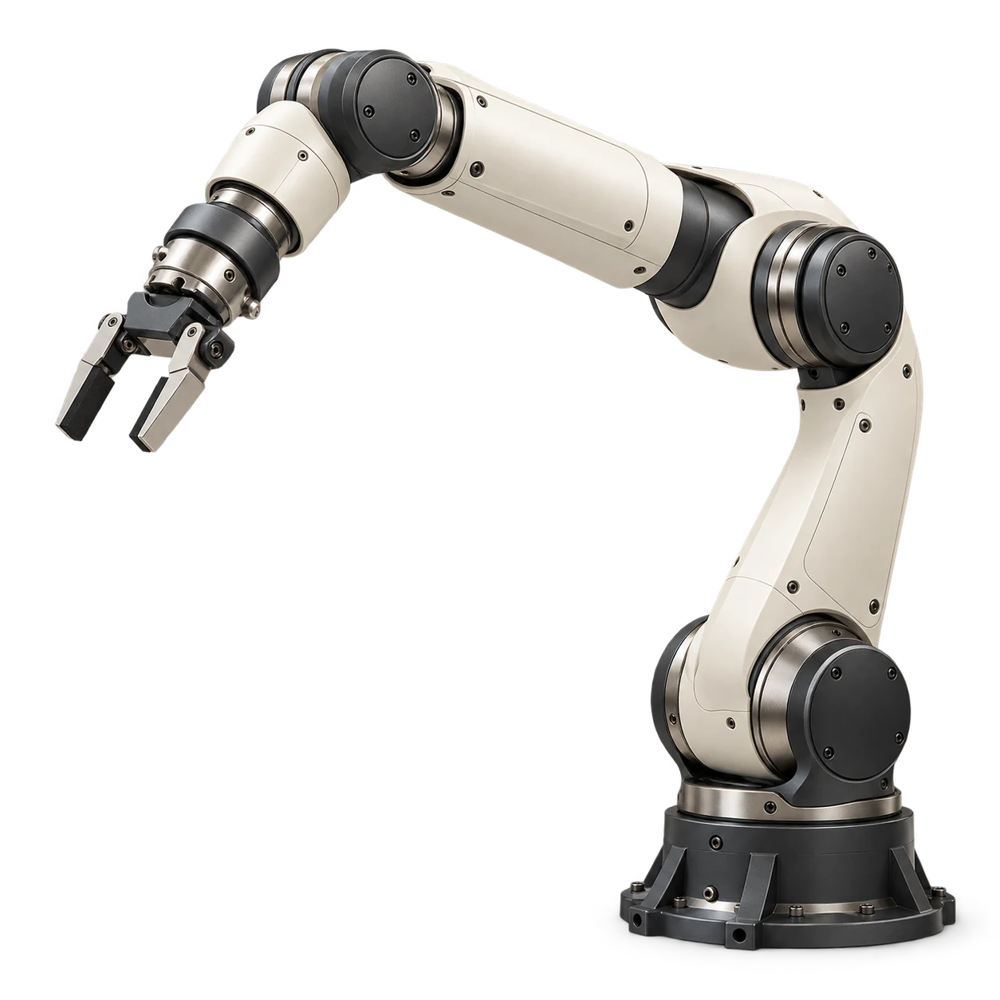

ICRA 2027Workshop proposal
Under construction
Geometry in engineering
Matrix Manifold Methods in Engineering
Robotics and
Brain-Computer Interfaces


The workshop
When does geometry
improve task outcomes?
We bring together matrix geometry, optimization, robotics, and neural signal decoding to examine the connection between geometric methods and task performance.
The program and further details will be added if the workshop is accepted.
Organizing team
Perspectives from geometry,
robotics, and neural decoding.
-
Ce Ju
Neural signal decodingThe Chinese University of Hong Kong, Shenzhen, China
-
Cyrus Mostajeran
Matrix geometryNanyang Technological University, Singapore
-
Frank Nielsen
Information geometrySony Computer Science Laboratories, Japan
-
Clément Bonet
Optimal transportÉcole Polytechnique, France
-
Bamdev Mishra
Riemannian optimizationMicrosoft, India
-
Silvère Bonnabel
State estimation & controlMines Paris – PSL, France
-
Noémie Jaquier
Geometric robot learningKTH Royal Institute of Technology, Sweden